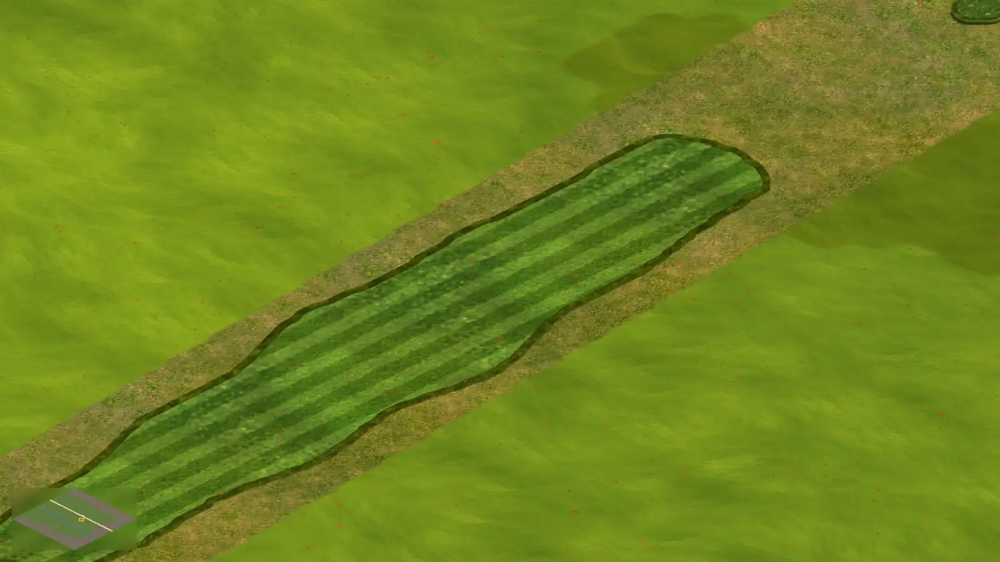

<!doctype html>
<html lang="en"><head><meta charset="utf-8"><title>P23 v2 m9: the half grid, three options (owner decision 5)</title>
<link rel="stylesheet" href="kit-v2.css"><script src="cameras-v2.js"></script><script src="mock-v2.js"></script>
<style>
  body { background: #101210; }
  .crop { position: absolute; top: 8px; width: 524px; height: 884px; overflow: hidden; border-radius: 14px; border: 1px solid rgba(255,255,255,.14); }
  .crop > .inner { position: absolute; width: 1600px; height: 900px; }
  .cap { position: absolute; left: 10px; top: 10px; right: 10px; padding: 9px 12px; border-radius: 10px; background: rgba(14,15,12,.9); font-size: 15px; font-weight: 700; }
  .cap small { display: block; font-size: 13px; font-weight: 500; color: var(--muted); margin-top: 3px; line-height: 1.4; }
</style></head>
<body><div class="stage" id="s"></div>
<script>
const M = MOCK, S = document.getElementById('s'), C = M.cams, tee = C.tee, green = C.green, st = C.state;
const cam = C['grown-17-bg'], P = M.iso(cam), T = M.tileOf(cam);
const dx = green.x - tee.x, dy = green.y - tee.y, L = Math.hypot(dx, dy), nx = -dy / L, ny = dx / L, mid = [(tee.x + green.x) / 2, (tee.y + green.y) / 2];
const sd = P(mid[0] + nx * 10, mid[1] + ny * 10)[0] > 800 ? 1 : -1, pt = [mid[0] + nx * 10 * sd, mid[1] + ny * 10 * sd];
const cx = Math.round(pt[0] * 2) / 2, cy = Math.round(pt[1] * 2) / 2, cells = []; for (let i = -1; i < 1; i++) for (let j = -1; j < 1; j++) cells.push([cx * 2 + i, cy * 2 + j]);
const fpc = M.cells(P, cells), sp = P(cx, cy);
const corners = [T(0, 0), T(1600, 0), T(0, 900), T(1600, 900)], xs = corners.map(q => q[0]), ys = corners.map(q => q[1]);
const [px, py, pw, ph] = st.parcel, bx0 = Math.max(px, Math.min(...xs)), bx1 = Math.min(px + pw, Math.max(...xs)), by0 = Math.max(py, Math.min(...ys)), by1 = Math.min(py + ph, Math.max(...ys));
const opts = [
  { t: '(a) Over all your land', s: 'As today (your T100): the 1 m grid over the whole course land while a course tool is in hand.', grid: 0.16, spot: 0 },
  { t: '(b) A spotlight only', s: 'The grid only within about 14 m of the pointer, fading out; nothing elsewhere.', grid: 0, spot: 0.5 },
  { t: '(c) A spotlight over a faint grid', s: 'Recommended: the spotlight where you paint, and a faint grid across your land to line things up from afar.', grid: 0.07, spot: 0.5 },
];
opts.forEach((o, i) => {
  const L0 = 8 + i * 532, ox = Math.max(524 - 1600, Math.min(0, Math.round(262 - sp[0]))), oy = Math.max(884 - 900, Math.min(0, Math.round(470 - sp[1])));
  const d = document.createElement('div'); d.className = 'crop'; d.style.left = L0 + 'px';
  d.innerHTML = `<div class="inner" style="left:${ox}px;top:${oy}px"><svg class="ov" style="width:1600px;height:900px">
    <defs><clipPath id="land${i}"><path d="${M.poly(P, M.rect(...st.parcel))}"/></clipPath></defs>
    ${o.grid ? `<g clip-path="url(#land${i})">${M.grid(P, bx0, by0, bx1, by1, '255,250,230', o.grid)}</g>` : ''}
    ${o.spot ? M.spot(P, cx, cy, 7, '255,250,230', o.spot) : ''}
    <path d="${fpc.fill}" fill="rgba(140,205,95,0.65)"/><path d="${fpc.stroke}" fill="none" stroke="#f3ffe8" stroke-width="2"/></svg></div>`;
  S.appendChild(d);
  M.pointer(d.querySelector('.inner'), sp[0] - 2, sp[1] - 4, { surf: 'fairway', wall: '#3d5a22' });
  M.html(d, `<div class="cap">${o.t}<small>${o.s}</small></div>`);
});
M.html(S, `<div class="title-strip">P23 v2 · m9 owner decision 5: the 1 m half grid while building · 17% zoom</div>`);
</script>
</body></html>
